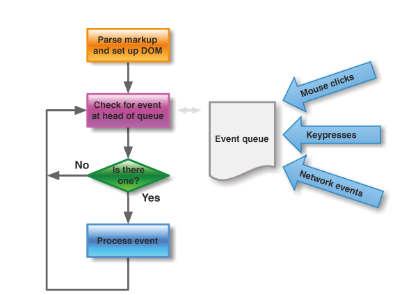

Web 05
Web page interactivity
DOM
(Document object model)
Objektova reprezentácia štruktúry a elementov na stránke
Tieto objekty vieme ovládať pomocou JavaScriptu a meniť ich vlastnosťi, čo sa odzrkadlí na samotnej stránke.
Taktiež vieme objekty pridávať, mazať, meniť.
Event (udalosť)
Za udalosť vo webe považujeme rôzne akcie.
- click na element
- load (načítanie) stránky
- keydown tlačidla klávesnice
Event loop
Úloha 1.
Zostrojte počítadlo kliknutí na tlačidlo.
Pripravíme si HTML
<button id="plus">-</button>
<span id="vysledok"> 0 </span>
<script src="js/counter.js"></script>
V JavaScripte pridáme 'listener' na click event pomocou metódy: button.addEventListener(handler)
// Nájdeme button na ktorý budeme reagovať
let button = document.getElementById('plus');
// Skôr ako pridáme `listener` na `click`
// potrebujeme `handler` funkciu,
// ktorá sa spustí na každý `click`
function handler(event) {
// `event` obsahuje informácie o skutočnosti, ktorá nastala
console.log(event)
}
// Pridáme `listener`
button.addEventListener(handler);
Chceme aby sa na každý click zmenil text iného elementu.
let result = document.querySelector('#vysledok');
// Do `handler` funkcie pridáme zmenu textu elementu.
function handler(event) {
console.log(event);
// `innerHTML` je vlastnosť elementu
// pomocou nej vieme čítať aj zapisovať celé vnútro elementu
result.innerHTML = 'Zmena textu';
// Taktiež vieme pridať alebo odobrať triedu elementu
result.classList.addClass('clicked');
}
Úlohy
- Namiesto zmeny textu vytvorte počítadlo, ktoré sa bude každým kliknutím pripočítavať
- Pridajte tlačidlo na odpočítavanie
- Pridajte nejaké extra effekty podľa hodnoty počítadla (zmena veĺkosti textu, pridať triedu 'big' ak dosiahne počitadlo viac ako 10 a podobne).
Úloha 2.
Načátanie dát za servra.
"Nainštalujeme" knižnicu, ktorá nám pomôže s načítavaním dát z iných zdrojov.
Načítame data -> Vyberieme data, ktoré nás zaujímajú -> Vypíšeme ich na stránku.
"Nainštalujeme" si jQuery knižnicu, ktorú využijeme na sťahovanie dát asynchrónne počas chodu stránky
Stačí len pridať script tag, ktorý smeruje na nejaký zdroj na internete.
<script src="https://ajax.googleapis.com/ajax/libs/jquery/3.1.1/jquery.min.js"></script>
Pripravili sme pre vás data o rôznych produktoch na adrese:
https://private-anon-b8f2d1a14f-nessnerdik.apiary-mock.com/products
Pomocou jQuery metódy $.get() stiahnieme data a vypíšeme si ich do konzoly.
// Musime povedat browsru nech pocka kym mame nacitanu celu stranku
// Potom budeme chciet stiahnut dalsie data
// Skratka pre $( document ).ready()
$(function() {
// Tu uz mozme bezpecne manipulovat s DOMkom
// Stiahneme data pomocou $.getJSON() metody
$.getJSON(url, function(data) {
// Callback funkcia ktora sa zavola ked data budu stiahnute a k dispozicii
console.log(data);
})
});
Kedže nemáme my šajnu, čo dokážete urobiť s týmito dátami,
tak nam to ukažte sami.